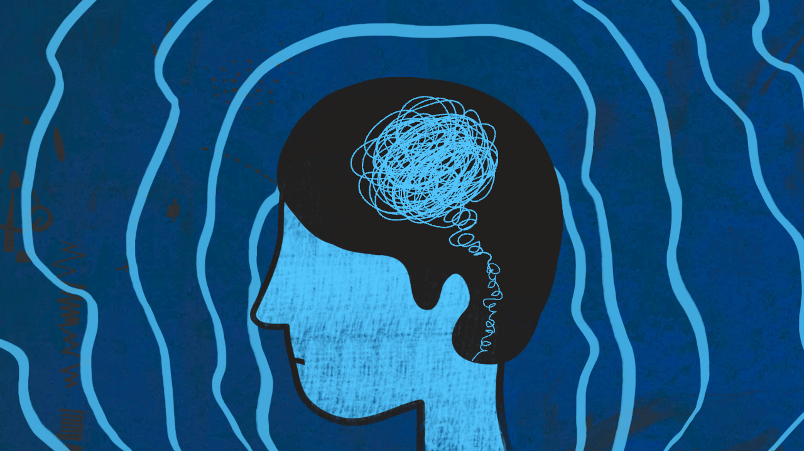

Salud mental en jóvenes

La adolescencia es un período crucial para el desarrollo de hábitos sociales y emocionales fundamentales para el bienestar mental, como los patrones de sueño saludables, el ejercicio regular, la capacidad para enfrentar situaciones difíciles y resolver problemas, las aptitudes interpersonales y la gestión de las emociones. Por eso, los adolescentes necesitan contar con un entorno favorable y protector en su familia, su escuela y su entorno. La salud mental puede verse afectada por diversos factores. Cuantos más sean los factores de riesgo a los que están expuestos los adolescentes, como la exposición a situaciones adversas, la presión social del entorno y la exploración de la propia identidad, mayores serán sus efectos en su salud mental. Además, la influencia de los medios de comunicación y la imposición de normas de género pueden resultarles dañinas porque aumentan la disparidad entre la realidad que viven y sus expectativas o aspiraciones de futuro. Otros determinantes importantes de la salud mental de los adolescentes son el buen ambiente en el hogar y las relaciones con sus compañeros. La violencia, en particular la violencia sexual y el acoso escolar y en el grupo, una crianza muy severa por parte de los padres y los problemas graves de índole socioeconómica o de otro tipo son riesgos conocidos para su salud mental. Algunos adolescentes corren más riesgo de padecer trastornos de salud mental a causa de sus condiciones de vida o de situaciones de estigmatización, discriminación, exclusión o falta de acceso a servicios y apoyo de calidad. Entre ellos se encuentran los que viven en lugares donde hay inestabilidad o se requiere ayuda humanitaria; los que padecen enfermedades crónicas, trastornos del espectro autista, discapacidad intelectual u otras afecciones neurológicas; las jóvenes embarazadas y los padres adolescentes o en matrimonios precoces o forzados; los huérfanos, y los miembros de minorías étnicas o sexuales o de otros grupos marginados.

Las intervenciones de promoción de la salud mental de los adolescentes se centran en mejorar su capacidad para gestionar las emociones, enseñar alternativas a las conductas de riesgo, desarrollar resiliencia ante las situaciones difíciles o adversas y promover los entornos y las relaciones sociales saludables. Estos programas deben diseñarse con un enfoque integral, que abarque varios canales y espacios de intervención —como los medios digitales, los centros sociales y de atención, las escuelas o el ámbito comunitario— y que se sirva de diversas estrategias para llegar a los adolescentes, en especial a los más vulnerables.